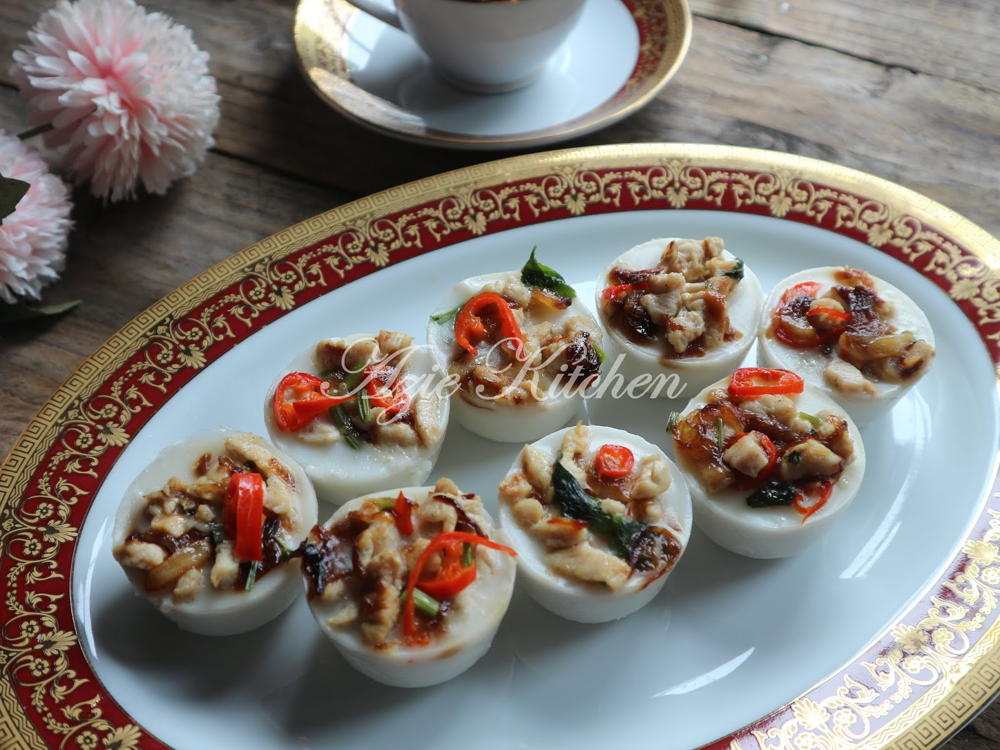
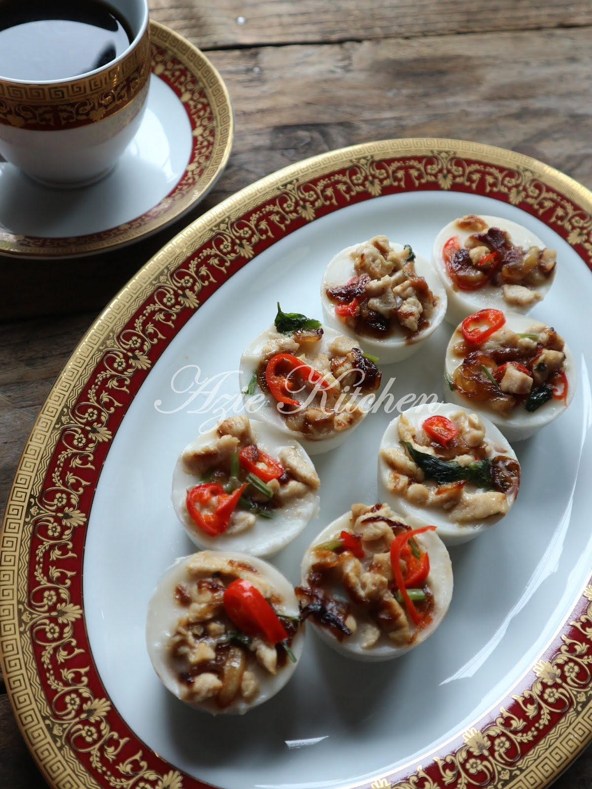
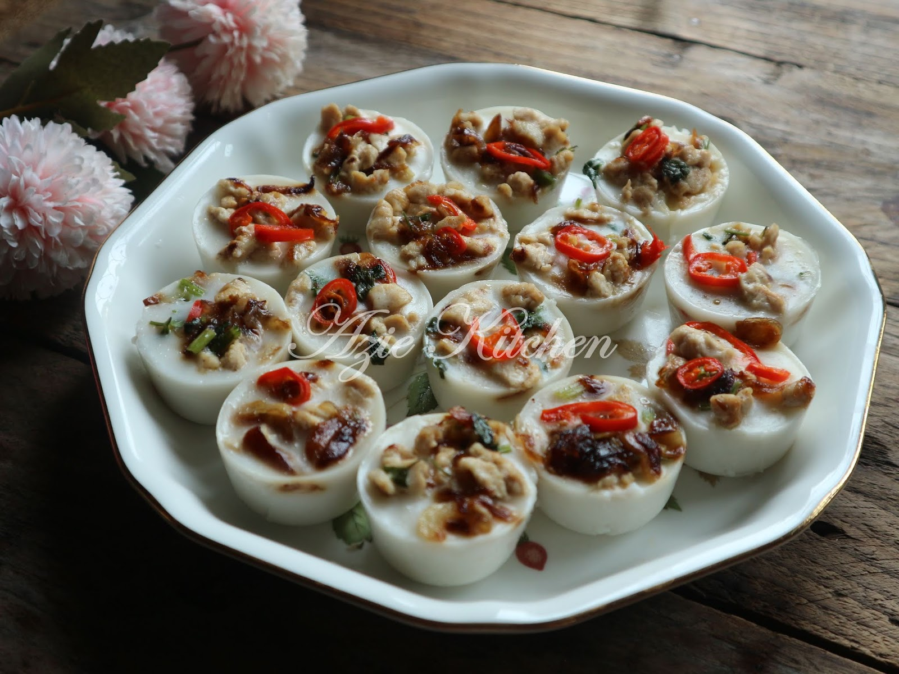
Untuk Lauk:
Bahan bahagian bawah:
Cara-cara:
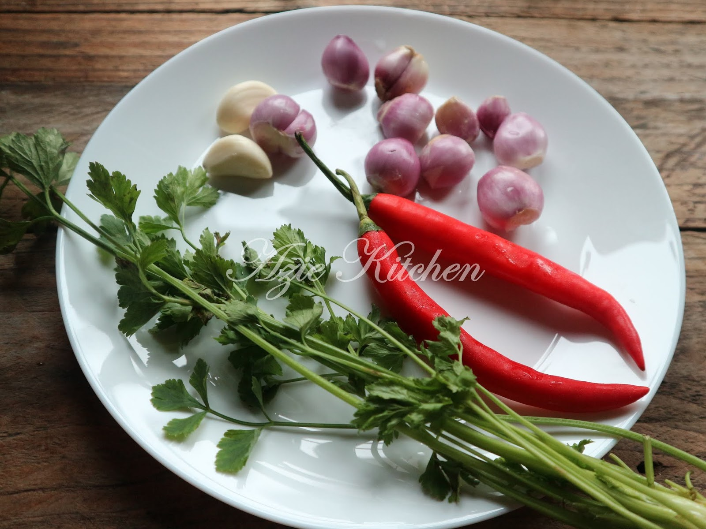
2.Panaskan minyak dan minyak sapi. Tumis bawang merah dan bawang putih sehingga kuning keemasan, angkat dan ketepikan.
3.Masukkan ayam dan kacau rata. Masukkan garam, gula dan serbuk lada sulah secukupnya. Setelah ayam masak, boleh lah ditutup api.
4.Masukkan bawang yang digoreng tadi bersama cili merah, daun sup dan daun bawang dan kacau rata. Ketepikan.
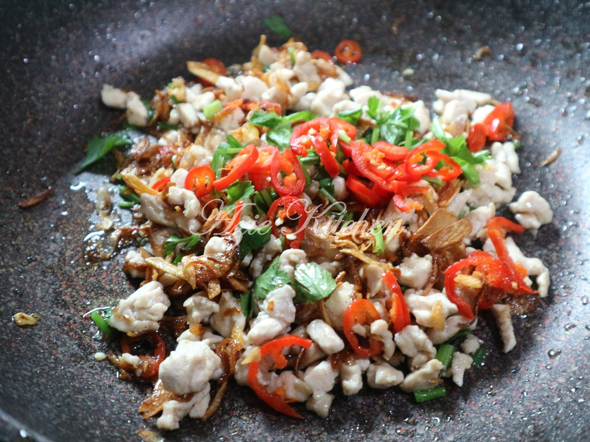
Cara Membuat Talam Berlauk:
5.Satukan semua bahan bahagian bawah dan kacau rata. Ketepikan sedikit untuk dijadikan bahan pelekat.
6.Masak atas api sekadar separuh masak.
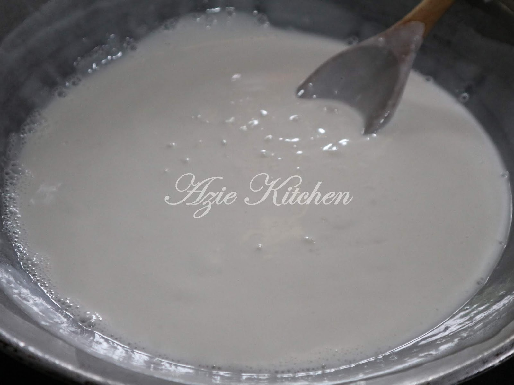
7.Tuang adunan ke dalam bekas atau acuan yang disapu sedikit minyak. Kukus dalam periuk pengukus yang air mendidih selama lebih kurang 10 minit.
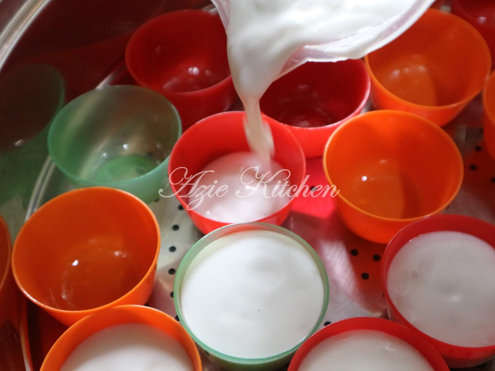
8.Kemudian angkat dan tabur bahan berlauk yang telah digoreng tadi.
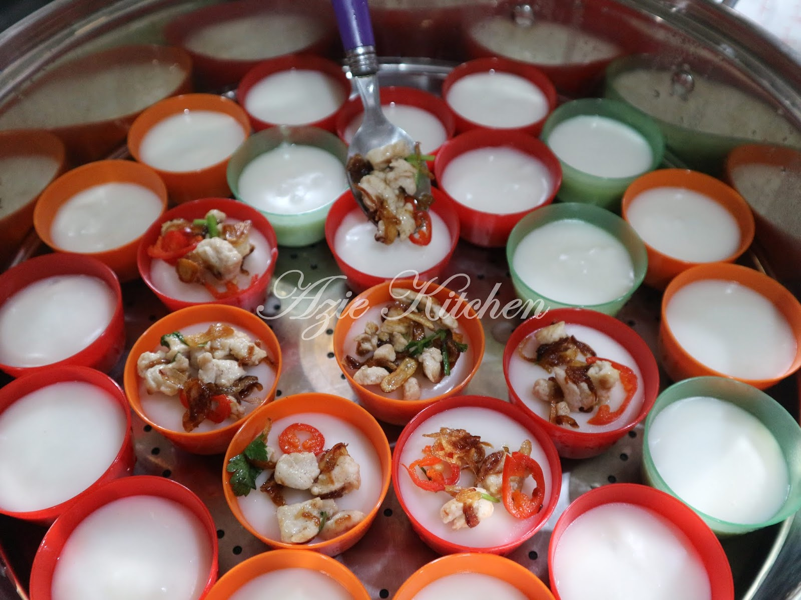
9.Titiskan tepung yang diasing tadi sedikit demi sedikit ke atas permukaan lauk tadi untuk melekatkannya.
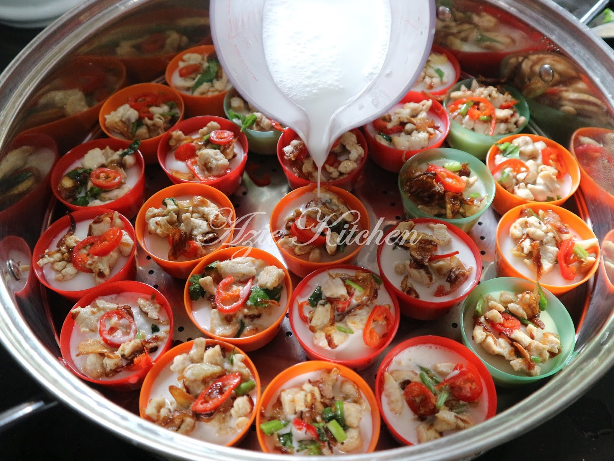
10.Kemudian sambung mengukus selama 3-5 minit lagi. Setelah sejuk, baru dipotong (jika kukus dalam talam) dan bolehlah dihidangkan. Selamat mencuba.
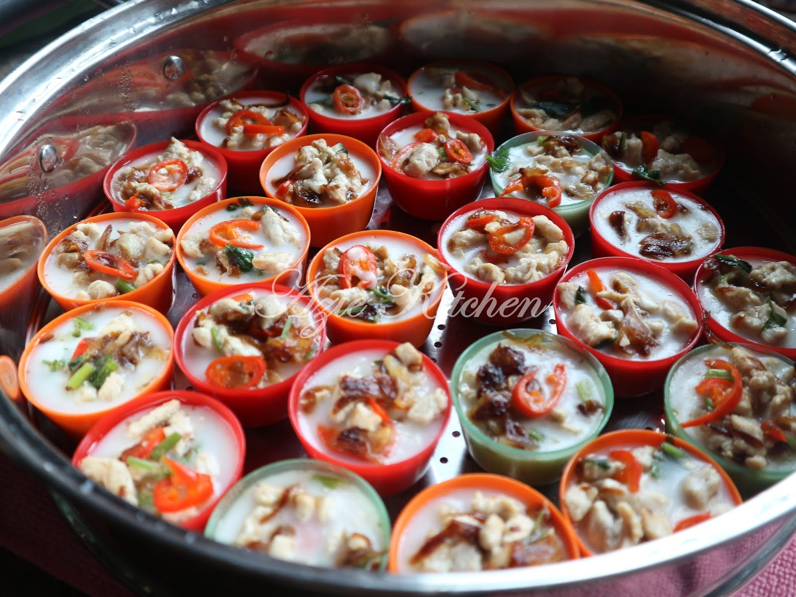
Nota:
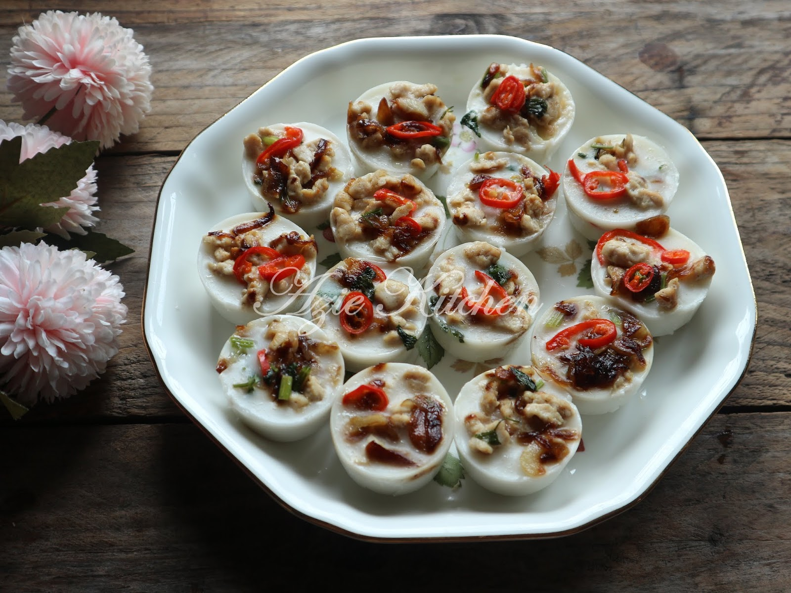
Credit: Azie Kitchen